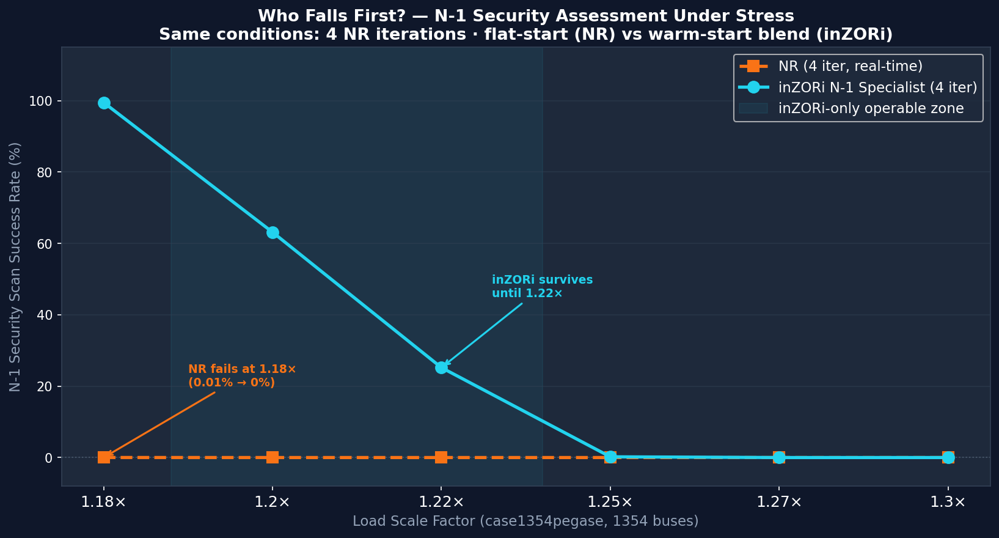
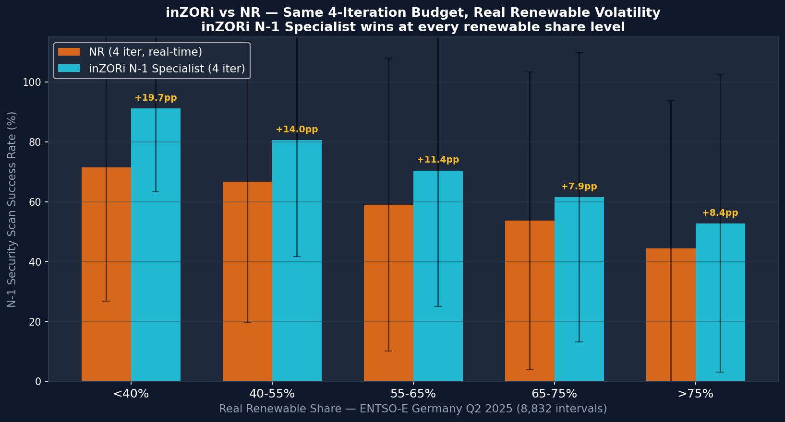
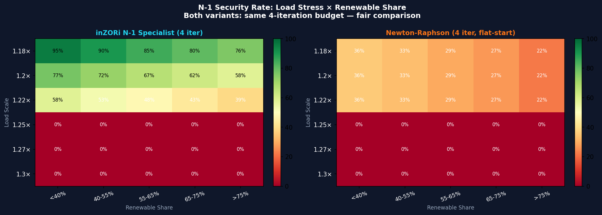

Who falls first? — Identical 4-iteration budget, 1354-bus Pan-European network, real ENTSO-E Germany Q2 2025 data · 8,832 sequential intervals
Power grid operators need fast N-1 security scans — checking whether the grid survives any single line failure. As renewable penetration rises, voltage profiles become volatile and solvers fail to converge within the real-time budget.
We do not include NR with 30 iterations — that would be a different scenario (offline, non-real-time). This study asks only: given the same real-time constraint, who survives longer under stress?

Fig. 1 — N-1 security assessment success rate vs. load scale factor. Same network (case1354pegase), same 4-iteration budget. NR (orange) collapses at 1.18× · inZORi (cyan) falls gracefully until 1.22×. ENTSO-E Germany Q2 2025 · 8,832 intervals · 3 seeds.
| Load Scale | NR (4 iter) | inZORi (4 iter) | Advantage | Status |
|---|---|---|---|---|
| 1.18× | 0.01% | 99.5% | +99.5pp | NR collapses · inZORi operational |
| 1.20× | 0.0% | 63.1% | +63.1pp | NR failed · inZORi majority success |
| 1.22× | 0.0% | 25.2% | +25.2pp | NR failed · inZORi partial |
| 1.25× | 0.0% | 0.2% | +0.2pp | Both at limit |
| 1.27× | 0.0% | 0.0% | — | Both failed |
| 1.30× | 0.0% | 0.0% | — | Both failed |

Fig. 2 — N-1 success rate binned by real renewable share (solar + wind), all load levels included. inZORi consistently outperforms NR by +8pp to +20pp across every renewable share bin. Error bars: ±1 std across 3 seeds.
| Renewable Share | NR (4 iter) | inZORi (4 iter) | Advantage (pp) |
|---|---|---|---|
| <40% | 71.5% | 91.2% | +19.7pp |
| 40–55% | 66.6% | 80.6% | +14.0pp |
| 55–65% | 59.0% | 70.4% | +11.4pp |
| 65–75% | 53.6% | 61.5% | +7.9pp |
| >75% | 44.4% | 52.7% | +8.4pp |

Fig. 3 — N-1 success rate heatmap: load scale (rows) × renewable share bins (columns). Left: inZORi N-1 Specialist · Right: NR flat-start. Same 4-iteration budget. Green = high success, red = failure. inZORi maintains green cells where NR is already red.
case1354pegase — Pan-European PEGASE model, 1354 buses, 1991 lines, ~73 GW nominal.
This is a realistic representation of the European high-voltage transmission grid,
used in ENTSO-E-affiliated research.
ENTSO-E Transparency Platform — Germany (DE-LU bidding zone) Q2 2025 (April–June). 15-minute generation mix: Solar PV, Wind Onshore, Wind Offshore, plus total load. 8,832 intervals total · Sequential simulation (no shuffling).
Real ENTSO-E load is normalized to produce a load factor applied to the case1354pegase nominal load. The normalized range spans 0.90× (low demand) to 1.35× (peak demand). The study evaluates N-1 success across load bins: 1.18×, 1.20×, 1.22×, 1.25×, 1.27×, 1.30×.
At each 15-minute interval: solve base case → for each of 5 randomly selected lines, remove line, attempt N-1 power flow, restore line. Record convergence success. Total N-1 checks: 8,832 × 5 × 3 seeds = 132,480 contingency assessments per variant.
| Parameter | NR (real-time) | inZORi N-1 Specialist |
|---|---|---|
| Iterations | 4 | 4 |
| Starting point | Flat (V=1.0 everywhere) | Partial blend: memory_lr × V_prev + (1–memory_lr) × 1.0 |
| Topology change | Ignored (flat-start every time) | Partially adapted (memory_lr tuned for N-1) |
| Fallback | None | Flat-start if blend fails (jump_chance) |
| Genome evolution | None (fixed algorithm) | 40 generations × 24 individuals on case1354pegase |
Evolved specifically for N-1 contingency scenarios where network topology changes. The key insight: a pure warm-start (memory_lr=1.0) is counterproductive when topology changes, because the previous V vector is from a different network. The evolved genome uses a partial blend (memory_lr ≈ 0.1–0.4) to retain useful voltage magnitude information while allowing adaptation to the new topology.
# 1. Evolve N-1 Specialist genome (40 generations, 24 individuals)
python3 /opt/projects/zor_task_solver/problems/inzori_re/evolve_n1_specialist.py
# 2. Run the study (8,832 intervals, 3 seeds, 12 workers)
python3 /opt/projects/zor_task_solver/problems/inzori_re/re_study_runner.py
# 3. Network
import pandapower.networks as pn
net = pn.case1354pegase() # 1354 buses, 1991 lines
# 4. Data
# ENTSO-E Transparency Platform → Generation per Type → DE-LU zone
# Period: April 1 – June 30, 2025 · 15-min resolution · Solar + Wind + Load
Results are stored in problems/inzori_re/results/re_study_results.json.
All random seeds are fixed per seed index (0, 1, 2) for reproducibility.
The core finding: when power grid operators run real-time N-1 security scans under a 4-iteration budget during peak load + high renewable periods, NR's flat-start cannot converge the post-contingency power flow. inZORi's genomically-tuned partial warm-start bridges this gap — delivering more security assessments with the same computational budget.